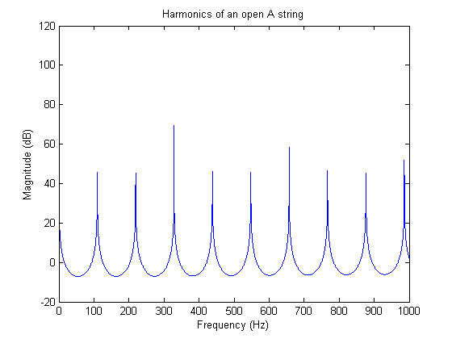
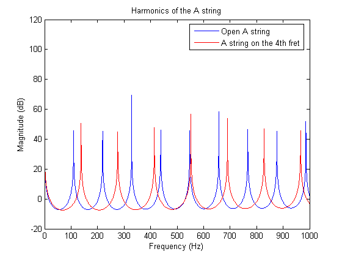
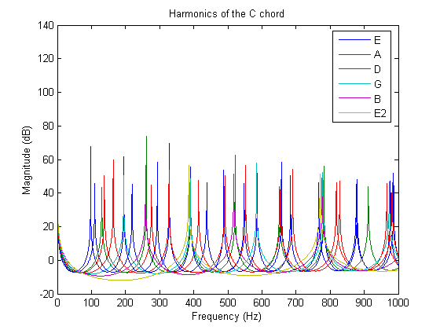

This demonstrates how discrete-time filter (DFILT) objects from the Signal Processing Toolbox can be used to generate realistic guitar chords using the Karplus-Strong Algorithm.
Begin by defining variables that we will be using later, e.g. the sampling frequency, the first harmonic frequency of the A string, the offset of each string relative to the A string.
Fs = 44100;
A = 110; % The A string of a guitar is normally tuned to 110 Hz.
Eoffset = -5;
Doffset = 5;
Goffset = 10;
Boffset = 14;
E2offset = 19;
Generate the frequency vector that we will use for analysis.
F = linspace(1/Fs, 1000, 2^12);
Generate 4 seconds of zeros to be used to generate the guitar notes.
x = zeros(Fs*4, 1);
When a guitar string is plucked or strummed, it produces a sound wave with peaks in the frequency domain that are equally spaced. These are called the harmonics and they give each note a full sound. We can generate sound waves with these harmonics with discrete-time filter objects.
Determine the feedback delay based on the first harmonic frequency.
delay = round(Fs/A);
Generate an IIR filter whos poles approximate the harmonics of the A string. The zeros are added for subtle frequency domain shaping.
b = firls(42, [0 1/delay 2/delay 1], [0 0 1 1]); a = [1 zeros(1, delay) -0.5 -0.5]; Hd = dfilt.df1(b, a);
Show the magnitude response of the filter.
[H,W] = freqz(Hd, F, Fs); plot(W, 20*log10(abs(H))); title('Harmonics of an open A string'); xlabel('Frequency (Hz)'); ylabel('Magnitude (dB)');
To generate the synthetic note we first populate the states with random numbers.
Hd.ResetBeforeFiltering = 'off';
Hd.States.Numerator = rand(42, 1);
Hd.States.Denominator = rand(delay+2, 1);
Create a 4 second note by filtering zeros. This will force the random states out of the filter and they will be shaped into the harmonics.
note = filter(Hd, x);
Normalize the sound for the audioplayer.
note = note-mean(note); note = note/max(abs(note)); hplayer = audioplayer(note, Fs); play(hplayer);
Each fret along a guitar's neck allows the player to play a half tone higher, or a note whose first harmonic is 2^(1/12) higher.
fret = 4; delay = round(Fs/(A*2^(fret/12))); b = firls(42, [0 1/delay 2/delay 1], [0 0 1 1]); a = [1 zeros(1, delay) -0.5 -0.5]; Hd = dfilt.df1(b, a); [H,W] = freqz(Hd, F, Fs); hold on plot(W, 20*log10(abs(H)), 'r'); title('Harmonics of the A string'); legend('Open A string', 'A string on the 4th fret');
Populate the states with random numbers.
Hd.ResetBeforeFiltering = 'off';
Hd.States.Numerator = rand(42, 1);
Hd.States.Denominator = rand(delay+2, 1);
Create a 3 second note.
note = filter(Hd, x);
Normalize the sound for the audioplayer.
note = note-mean(note); note = note/max(note); hplayer = audioplayer(note, Fs); play(hplayer);
A chord is a group of notes played together whose harmonics enforce each other. This happens when there is a small integer ratio between the two notes, e.g. a ratio of 2/3 would mean that the first notes third harmonic would align with the second notes second harmonic.
Define the frets for the C chord.
fret = [3 3 2 0 1 3];
Get the delays for each note based on the frets and the string offsets.
delay = [round(Fs/(A*2^((fret(1)+Eoffset)/12))), ... round(Fs/(A*2^(fret(2)/12))), ... round(Fs/(A*2^((fret(3)+Doffset)/12))), ... round(Fs/(A*2^((fret(4)+Goffset)/12))), ... round(Fs/(A*2^((fret(5)+Boffset)/12))), ... round(Fs/(A*2^((fret(6)+E2offset)/12)))]; for indx = 1:length(delay) % Build a vector of DFILTs. b = firls(42, [0 1/delay(indx) 2/delay(indx) 1], [0 0 1 1]); a = [1 zeros(1, delay(indx)) -0.5 -0.5]; Hd(indx) = dfilt.df1(b, a); % Populate the states with random numbers. Hd(indx).ResetBeforeFiltering = 'off'; Hd(indx).States.Numerator = rand(42, 1); Hd(indx).States.Denominator = rand(delay(indx)+2, 1); note(:, indx) = filter(Hd(indx), x); % Make sure that each note is centered on zero. note(:, indx) = note(:, indx)-mean(note(:, indx)); end
Display the magnitude for all the notes in the chord.
[H,W] = freqz(Hd, F, Fs); hline = plot(W, 20*log10(abs(H))); title('Harmonics of the C chord'); xlabel('Frequency (Hz)'); ylabel('Magnitude (dB)'); legend(hline, 'E','A','D','G','B','E2');
Combine the notes and normalize them.
combinedNote = sum(note,2); combinedNote = combinedNote/max(abs(combinedNote)); hplayer = audioplayer(combinedNote, Fs); play(hplayer);
To add a strumming effect we simply offset each previously created note.
Define the offset between strings as 50 milliseconds
offset = 50; offset = ceil(offset*Fs/1000);
Add 50 milliseconds between each note by prepending zeros.
for indx = 1:size(note, 2) note(:, indx) = [zeros(offset*(indx-1),1); ... note((1:end-offset*(indx-1)), indx)]; end combinedNote = sum(note,2); combinedNote = combinedNote/max(abs(combinedNote)); hplayer = audioplayer(combinedNote, Fs); play(hplayer);
See also filterguitar.m